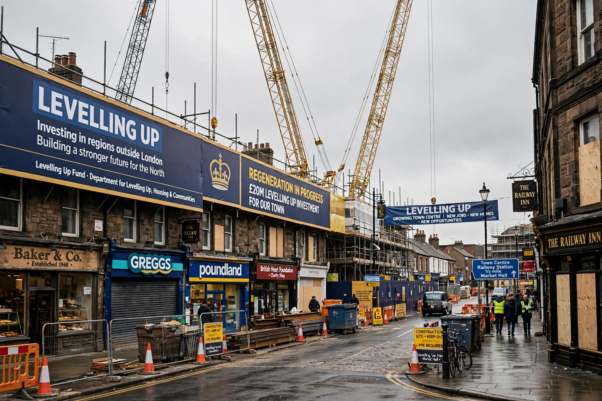

Levelling up was a political policy first articulated in the 2019 Conservative Party manifesto, aimed at reducing geographic economic inequalities between areas and social groups in the United Kingdom — in particular between London and South East England and the rest of the country.

Under Boris Johnson, and with Michael Gove as Secretary of State for Levelling Up, the government created the Department for Levelling Up, Housing and Communities, the Levelling Up Fund, Towns Fund and UK Shared Prosperity Fund. The February 2022 White Paper Levelling Up the United Kingdom set twelve missions to 2030 covering living standards, transport, education, health and devolution.
Critics argued funding was small relative to earlier austerity cuts, competitively allocated, and slow to deliver. After Labour won the 2024 election, the department was renamed and "levelling up" was dropped from its title. See Boris Johnson and Regional inequality.